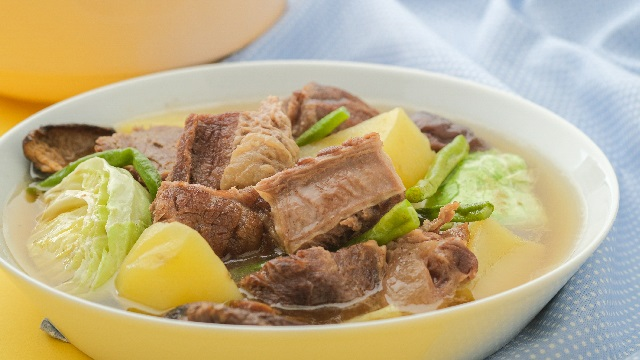

Traditional Filipino Nilaga Recipe

Description
Beef Nilaga is a hearty soup dish good for rainy and sick days. It is easy and simple to prepare.
Ingredients
- 2 lbs beef brisket (cubed)
- 1 big potato (cubed)
- 1 bok choy
- 1 large onion (chopped)
- 2 medium sized carrots (chopped crosswise)
- 1 tbsp whole pepper corn
- 3 tbsp fish sauce (or patis)
Steps
- Saute the onion until texture becomes soft
- Add in the beef brisket and cook for about 5 minutes
- Add the fish sauce and whole pepper corn then mix well
- Pour in the water and bring to a boil, simmer for 1 to 2 hours
- Put in the vegetables starting with the potato and the carrots, simmer for 5 to 7 minutes
- Add the bok choy, cover the pot, turn off heat, and let it stay for 5 minutes
- Serve hot and enjoy!